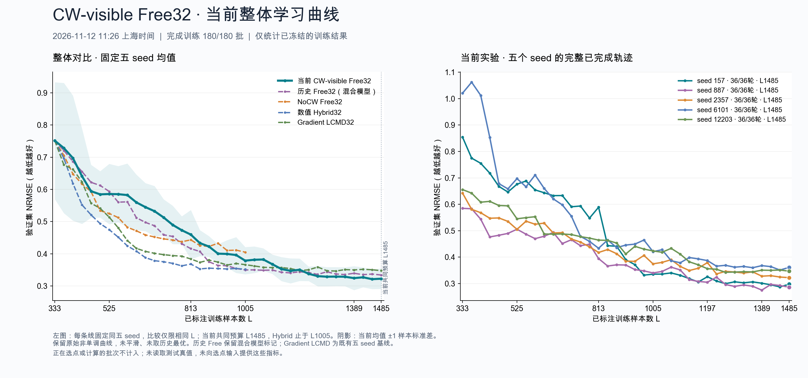

180 / 180 批全部接受并完成训练；五个 seed 均完成 36 轮，L333 → L1485。
157 最后一批完成于上海时间 2026年11月12日11:17:39。终态离线核验：2026-11-12T11:32:11.367677+08:00。模型 gpt-6.1-sol，reasoning effort xhigh；累计传输尝试 173511，成功响应轮次 430。
五条冻结轨迹，每条新增1152个不重复的训练样本；180个完成标记、每批完整输入与候选池、请求及纠错历史、成功回执、选点冻结、标签揭示回执、模型与预测冻结绑定均通过核验。共核对 350487 个文件哈希。全部开始的请求均有本地回执；仅保留精确授权的五份历史401回执，没有新增未决请求。
报告与核验未发起选点请求、未训练模型、未读取测试真值，未将监控指标回填选点输入或记忆。价格未经核实，保留 usage 与回执，不推算货币费用。NoCW 未修改、停止或发送信号。
| seed | 完成轮数 | 最终 L | 终点验证 NRMSE | 全程归一化 AULC | 累计传输尝试 |
|---|---|---|---|---|---|
| 157 | 36 | 1485 | 0.297385 | 0.474008 | 39954 |
| 887 | 36 | 1485 | 0.286149 | 0.392782 | 32938 |
| 2357 | 36 | 1485 | 0.322276 | 0.428492 | 33801 |
| 6101 | 36 | 1485 | 0.360925 | 0.521933 | 32781 |
| 12203 | 36 | 1485 | 0.346779 | 0.453758 | 34037 |
下表均为固定同五个 seed 的均值 ± 样本标准差（ddof=1）。NRMSE及AULC均越低越好。
| 预算 L | 终点验证 NRMSE | L333起原始曲线归一化 AULC |
|---|---|---|
| 525 | 0.585789 ± 0.093782 | 0.652486 ± 0.135550 |
| 813 | 0.459699 ± 0.076485 | 0.581260 ± 0.092452 |
| 1005 | 0.378752 ± 0.042341 | 0.532876 ± 0.072537 |
| 1389 | 0.324466 ± 0.037250 | 0.466035 ± 0.051168 |
| 1485 | 0.322703 ± 0.031694 | 0.454195 ± 0.048511 |
每个参考方法分别采用同五个 seed 均已完成的共同预算。Δ = 本次 CW-visible Free32 − 参考方法；负值表示本次误差较低。AULC使用L333起的全部原始、非单调曲线做梯形积分，再除以预算跨度；没有平滑、累计最优或单调包络。
| 参考方法 | 共同 L | 本次 AULC | 参考 AULC | 逐seed配对 Δ（均值 ± 样本SD） |
|---|---|---|---|---|
| 历史 Free（混合模型） | 1485 | 0.454195 ± 0.048511 | 0.439159 ± 0.057253 | 0.015036 ± 0.010130 |
| NoCW | 1005 | 0.532876 ± 0.072537 | 0.497741 ± 0.065443 | 0.035136 ± 0.011625 |
| 数值 Hybrid32 | 1005 | 0.532876 ± 0.072537 | 0.438420 ± 0.067272 | 0.094457 ± 0.022168 |
| Gradient-LCMD32 | 1485 | 0.454195 ± 0.048511 | 0.417049 ± 0.049452 | 0.037145 ± 0.015703 |
| 参考方法 | 共同 L | 本次验证 NRMSE | 参考验证 NRMSE | 逐seed配对 Δ（均值 ± 样本SD） |
|---|---|---|---|---|
| 历史 Free（混合模型） | 1485 | 0.322703 ± 0.031694 | 0.334085 ± 0.037097 | -0.011382 ± 0.017314 |
| NoCW | 1005 | 0.378752 ± 0.042341 | 0.405025 ± 0.046221 | -0.026273 ± 0.059947 |
| 数值 Hybrid32 | 1005 | 0.378752 ± 0.042341 | 0.351918 ± 0.039880 | 0.026834 ± 0.030787 |
| Gradient-LCMD32 | 1485 | 0.322703 ± 0.031694 | 0.347582 ± 0.030467 | -0.024879 ± 0.013563 |
本次全程AULC高于四个参考方法；共同预算终点NRMSE低于历史Free、NoCW与Gradient-LCMD，高于数值Hybrid。终点改善与全程表现是不同结果，不能互相替代。
| seed | 本次 AULC | 参考 AULC | AULC Δ | 终点 NRMSE Δ |
|---|---|---|---|---|
| 157 | 0.474008 | 0.471574 | +0.002434 | -0.034370 |
| 887 | 0.392782 | 0.368170 | +0.024612 | +0.011449 |
| 2357 | 0.428492 | 0.406254 | +0.022238 | -0.017664 |
| 6101 | 0.521933 | 0.516033 | +0.005900 | -0.014843 |
| 12203 | 0.453758 | 0.433764 | +0.019994 | -0.001484 |
| seed | 本次 AULC | 参考 AULC | AULC Δ | 终点 NRMSE Δ |
|---|---|---|---|---|
| 157 | 0.589655 | 0.556560 | +0.033096 | -0.102181 |
| 887 | 0.451581 | 0.430235 | +0.021346 | -0.047210 |
| 2357 | 0.484011 | 0.441695 | +0.042315 | +0.014562 |
| 6101 | 0.624945 | 0.574143 | +0.050802 | -0.047956 |
| 12203 | 0.514190 | 0.486071 | +0.028119 | +0.051421 |
| seed | 本次 AULC | 参考 AULC | AULC Δ | 终点 NRMSE Δ |
|---|---|---|---|---|
| 157 | 0.589655 | 0.457923 | +0.131732 | +0.006686 |
| 887 | 0.451581 | 0.371556 | +0.080025 | +0.023841 |
| 2357 | 0.484011 | 0.401420 | +0.082591 | +0.022609 |
| 6101 | 0.624945 | 0.545111 | +0.079834 | +0.001889 |
| 12203 | 0.514190 | 0.416087 | +0.098104 | +0.079144 |
| seed | 本次 AULC | 参考 AULC | AULC Δ | 终点 NRMSE Δ |
|---|---|---|---|---|
| 157 | 0.474008 | 0.414992 | +0.059016 | -0.033023 |
| 887 | 0.392782 | 0.349426 | +0.043356 | -0.017944 |
| 2357 | 0.428492 | 0.412415 | +0.016077 | -0.043952 |
| 6101 | 0.521933 | 0.489007 | +0.032926 | -0.019836 |
| 12203 | 0.453758 | 0.419406 | +0.034352 | -0.009641 |

157: Astra/high prefix through L525; 6101: through L653; one historical unknown accepted ID-copy record; 887/2357/12203 Sol/xhigh from L333
历史Free保留混合模型标记。API随机性、运行日期与不可见后端差异仍存在；这些比较不单独证明CW的因果效果。NoCW的共同预算为L1005，不外推到L1485。
本目录为用户授权的结果Git归档。原始模型、全量输入与候选池、凭据、运行日志及此前约定仅本地保留的控制器代码/授权/切换证据仍保留本地；归档范围和哈希见publication_manifest.json。